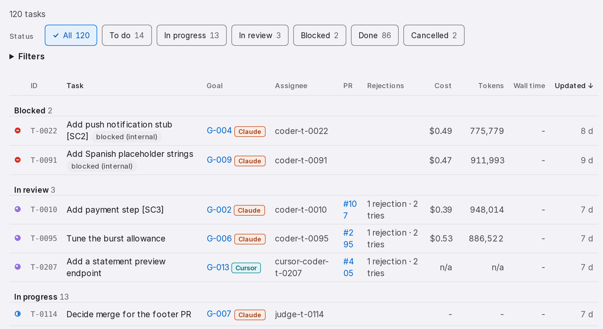

CTOs and engineering leads
Ship the overdue export.
“Add filtered CSV exports. Respect account permissions and test empty results.”
Your own AI software factory
Run AI coding agents on your own Linux host. Hivemill coordinates implementation, review and testing while your laptop stays free.
Inside Hivemill
The real interface, with fictional demo data.
Goals, active agents and decisions that need you.

Read-only progress, resources and Claude cost estimates. Cursor activity is measured in sessions and agent-hours.
A status bar and alert notifications.
Cost estimates use model list prices, not invoices.
By default, separate review and QA must pass before the judge merges. Your project controls the final gate.
You + the boss
Describe the change and acceptance criteria. The boss turns your request into a goal.
Where it fits
Example workflows, not customer case studies.
CTOs and engineering leads
“Add filtered CSV exports. Respect account permissions and test empty results.”
Agency technical directors
“Fix the portal’s mobile navigation. Preserve keyboard access and test the key pages.”
Internal tools and platform leads
“Flag duplicate orders before import. Show affected rows and add regression tests.”
Bring an existing repository, repeatable tests and an engineer who owns the outcome.
Discuss a pilotInstall Hivemill and adapt roles, skills and plugins from the catalog. For a guided pilot, bring one repository and a concrete change.